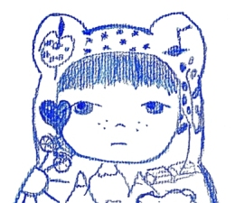
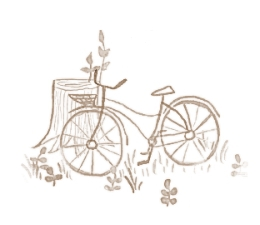

Ursul Poet

scrie poezii lăsând urme adânci în culori stranii.
îi plac
șosetele desperecheate și buclele nepieptănate.
folosește
materiale tradiționale: vopseluri acrilice, acuarelă, guașă,
creioane colorate și ne-, tuș ...
Bicicleta Albastră

este deținută de un un motan roșu și pufos.
a fost înființată
în visul unei nopți de vară, acum muuulți ani.
are un meniu
cuprinzător de vise, speranțe și posibilități...